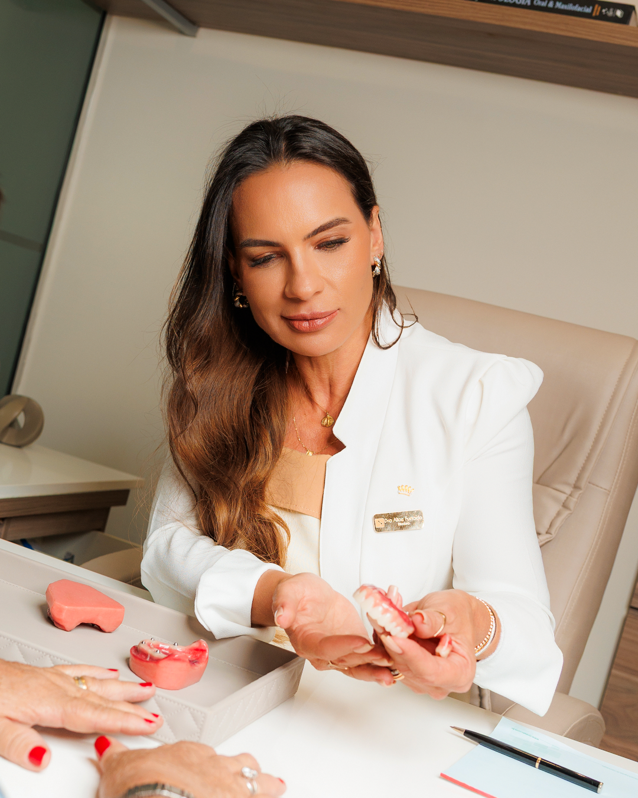

Imagem — Implantes Dentários
Implantes Dentários
Substituem raízes dentárias perdidas com estabilidade de longa duração e estética natural.
Agendar avaliaçãoDentes fixos para quem usa dentadura ou perdeu dentes e deseja voltar a mastigar, falar e sorrir com mais segurança.
Na Oral Sin, cada paciente é acolhido de forma individual para encontrar a solução mais segura e adequada para o seu caso. Cuidar é a nossa paixão, e isso se traduz em cada etapa do atendimento.

Depois dos 60, conviver com dentadura ou dentes ausentes afeta a alimentação, a saúde e a autoestima.
Somos referência em implantes, mas cuidamos de toda a sua saúde bucal com tecnologia e equipe especializada.
Substituem raízes dentárias perdidas com estabilidade de longa duração e estética natural.
Agendar avaliaçãoDentes provisórios fixos no mesmo dia da cirurgia. Você sai da clínica sorrindo.
Agendar avaliaçãoPrótese fixa sobre implantes para quem perdeu todos os dentes de uma arcada.
Agendar avaliaçãoSolução avançada para casos de pouca massa óssea, ancorada no osso zigomático.
Agendar avaliaçãoCoroa cerâmica fixada sobre o implante, indistinguível dos dentes naturais.
Agendar avaliaçãoReabilitação total em material premium, branco e altamente biocompatível.
Agendar avaliaçãoTradição nacional com atendimento próximo e humano em Juiz de Fora.
Equipe dedicada exclusivamente a implantes e reabilitação oral, com protocolos seguros.
Planejamento com exames de imagem para mais previsibilidade e conforto no tratamento.
Condições facilitadas para você cuidar do seu sorriso sem comprometer o orçamento.
Acolhimento, paciência e linguagem clara em cada etapa. Você nunca fica com dúvidas.
Da primeira conversa ao sorriso novo, você é acompanhado em cada passo.
Conversamos, examinamos sua boca e entendemos o seu caso, sem compromisso.
Você recebe um diagnóstico claro, com opções de tratamento e valores transparentes.
Procedimento seguro e tranquilo, com toda a estrutura e cuidado da Oral Sin.
Dentes fixos, mastigação de volta e a liberdade de sorrir sempre que quiser.
Cada sorriso é uma história. Veja transformações reais de pacientes da Oral Sin, conduzidas pela nossa equipe especialista.
"Atendimento humanizado e acolhedor, incluindo a recepção e toda a equipe. Eu me senti uma cliente muito especial. Recomendo demais!!!"
"Excelente!!! Dra. Alice e Dr. Erico são impecáveis. Fiz o procedimento com grande conforto. A equipe o tempo todo querendo agradar. Sem exploração financeira."
"Adorei o atendimento, profissionais muito bons e a equipe é bem educada. Super indico. Obrigada por devolver o meu sorriso!"
"Voltei a comer carne depois de anos usando dentadura. A equipe é nota mil, me trataram com muito cuidado do começo ao fim."
"Tinha muito medo de fazer implante, mas foi tranquilo. Explicaram cada etapa com paciência. Recomendo de olhos fechados."
"Do orçamento à cirurgia, tudo muito bem explicado. Profissionais atenciosos e ambiente impecável. Estou muito satisfeito."
"Meu protocolo ficou perfeito, ninguém percebe que não são meus dentes de verdade. Voltei a sorrir com confiança."
"Clínica limpa, moderna e equipe muito atenciosa. Consegui parcelar e valeu cada centavo. Recomendo a todos."
"Recuperei a minha autoestima. Hoje sorrio em todas as fotos da família sem nenhuma vergonha. Sou muito grata!"
"Atendimento pontual e sem enrolação. Meus implantes ficaram ótimos e o pós-operatório foi super acompanhado. Nota 10."
As dúvidas mais comuns de quem está pensando em fazer implantes.
Sim! A idade não é um impedimento. O que avaliamos é a saúde geral e a quantidade de osso. Muitos dos nossos pacientes têm entre 60 e 80 anos e fazem implantes com excelentes resultados.
A cirurgia é feita com anestesia local e é mais tranquila do que a maioria imagina. No pós-operatório, qualquer desconforto é controlado com medicação simples e orientação da nossa equipe.
Sim. A prótese protocolo é exatamente isso: uma arcada de dentes fixos sobre implantes, que substitui a dentadura solta. Na avaliação gratuita verificamos a melhor solução para o seu caso.
Depende do seu caso. Em situações indicadas, é possível sair com dentes fixos provisórios no mesmo dia (carga imediata). Em outros, o processo leva algumas semanas até a finalização definitiva.
Sim. Oferecemos condições de pagamento facilitadas e parcelamento para que você possa cuidar do seu sorriso sem pesar no orçamento. Os valores são apresentados com total transparência.
Preencha seus dados e fale agora com a nossa equipe. A avaliação é gratuita e sem compromisso.
Informação de confiança sobre implantes, próteses e saúde bucal na maturidade.
Entenda por que a idade não impede o tratamento e o que realmente importa para o sucesso.
Ler artigoCompare conforto, mastigação, estética e durabilidade para decidir com segurança.
Ler artigoSaiba como funciona, quem pode fazer e quais os cuidados desse tipo de tratamento.
Ler artigo